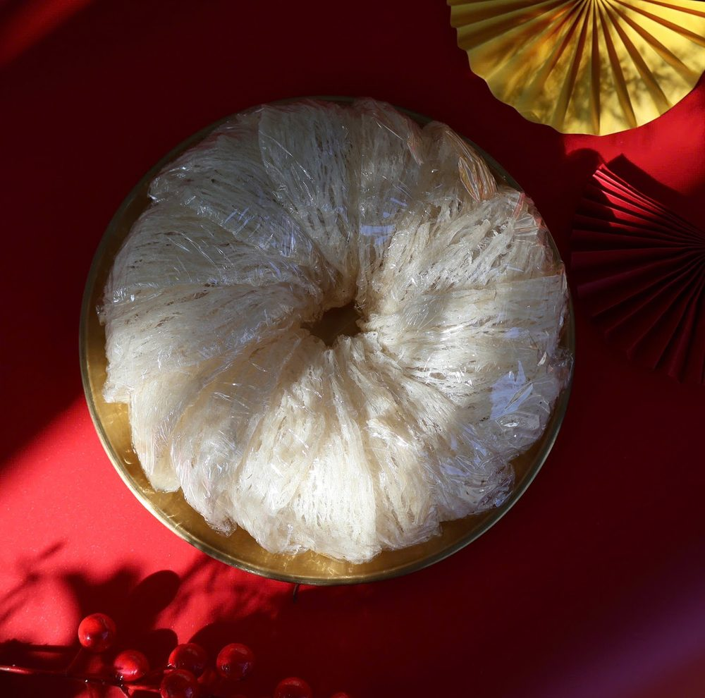

Nhiều sợi nhất
Yến Tinh Chế 100% Sợi
Giữ nguyên sợi yến, không pha vụn. Sợi trắng ngà, dai nhẹ, thơm dịu.
- Làm sạch hoàn toàn bằng tay
- Ngâm 15–20 phút là chưng được
- Hộp 100g · 50g, hợp làm quà
Liên hệgiá theo lô hàng
Nhận báo giá